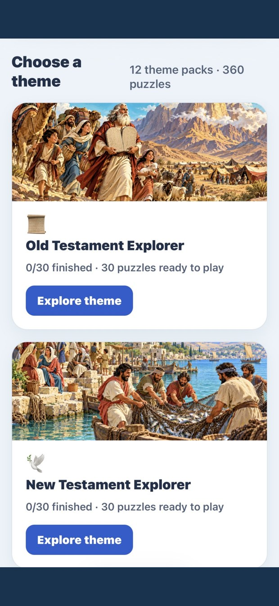
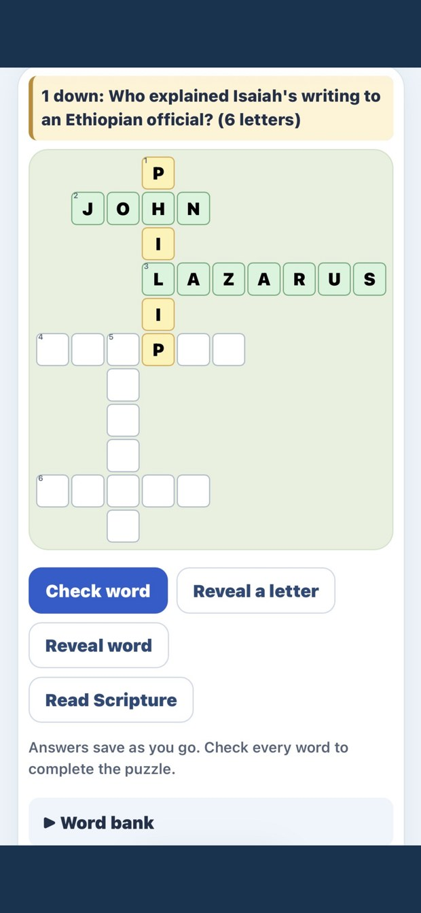
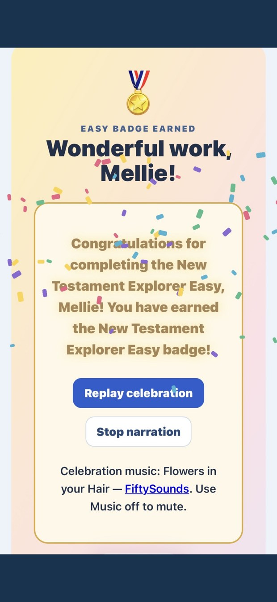
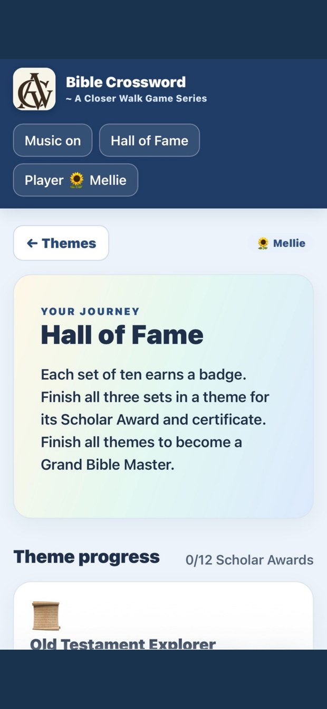

Find your favorite theme
Explore Genesis, the Life of Jesus, Women of the Bible, Parables, Revelation, and more across 12 themes.
A Closer Walk Game Series
Explore Bible people, places, and passages through crosswords that invite you to open Scripture with every clue.

A welcoming Bible experience from A Closer Walk Ministries, designed to make learning engaging and encourage a closer look at God’s Word.
Explore Genesis, the Life of Jesus, Women of the Bible, Parables, Revelation, and more across 12 themes.
Complete ten puzzles each at Easy, Medium, and Hard. Each completed level unlocks the next difficulty within that theme.
Choose Read Scripture for help with each clue. Use unlimited hints and retries as you learn.
Listen to clue and Scripture narration, and use Enlarge Grid when you want a closer view of the puzzle.
Earn a badge for each difficulty, a Scholar Award for completing a theme, and Grand Bible Master for completing every theme.
Enjoy celebrations, revisit completed puzzles, and customize a certificate with design and color choices.
Real screenshots from the app. Select any image for a larger view.





Bible Crossword is now available on the App Store for iPhone and iPad!
Questions? Visit App SupportBible Crossword is part of A Closer Walk Ministries’ growing family of Bible-centered apps and resources. Explore another way to learn with Faith-Trails and What Does the Bible Say?, or visit our ministry website.